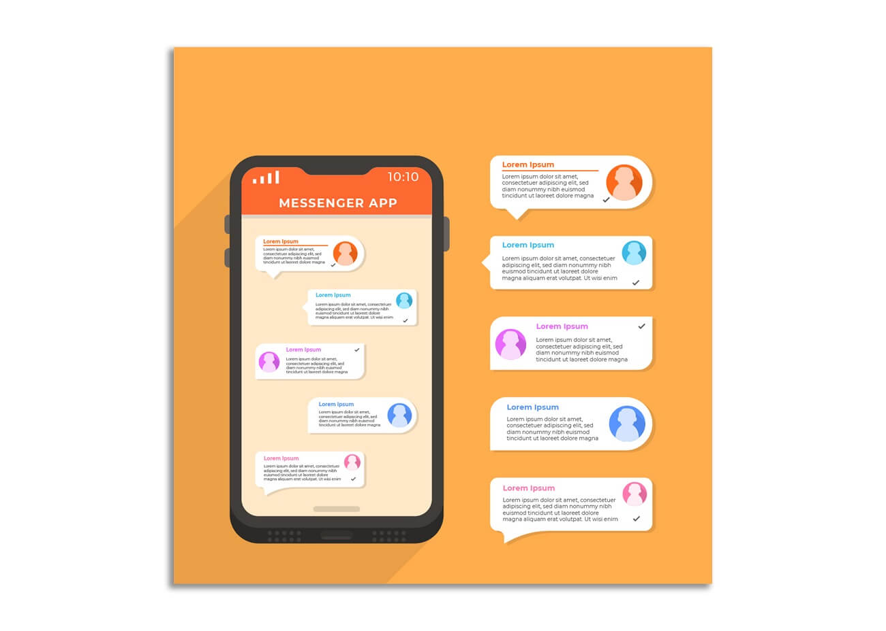

Top Java IDEs to Start Practicing Java Projects
There are many Java IDEs (integrated development environments) and online compilers available for creating Java projects. Let's discuss a few of them -
Eclipse,
IntelliJ,
NetBeans,
BlueJ,
Xcode,
DrJava,
MyEclipse,
Anjuta
Java Project Ideas for Beginners
As a beginner, it might be difficult to come up with ideas for projects, that's why we have decided to curate a list of amazing java projects for beginners.
1) Bank Management Software
2) Temperature Converter
3) Supermarket Billing Software
4) Chatting Application

5) Email-Client Software
6) Food Ordering System